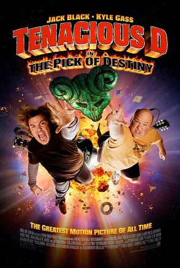
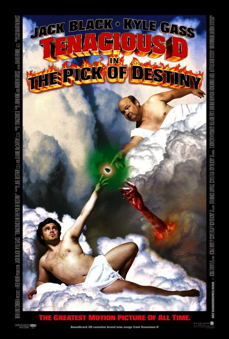
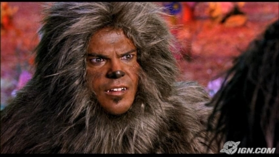

Tenacious D.
Sinopse
Tenacious D. é um filme de comédia/musical que conta uma história de uma dupla que muda o rumos do Rock'n Roll. JB (Jack Black) e KG (Kyle Gass) se encontram após Jack Black ter uma conversa com seu poster de Ronnie James Dio e fugir de casa. Juntos decidem escrever seus nomes na história da música e para isso encaram uma aventura onde tem que roubar a palheta do destino que é forjada do canino de satan.
Com muito Rock'n Roll e comédia esse filme promete te fazer rir muito e balançar sua cabeça com os riffs pesados e canções muito animadas.
O filme é dirigido por Liam Lynch e o roteiro feito pelos próprios Jack Black e Kyle Gass junto com Liam Lynch.
Ficha Técnica
Elenco


Imagens


